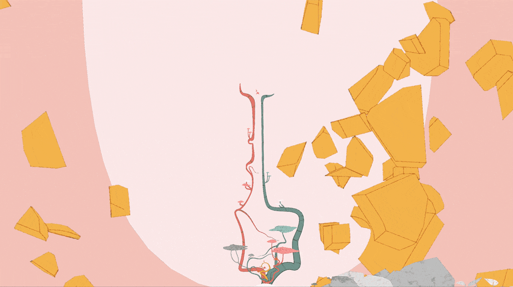
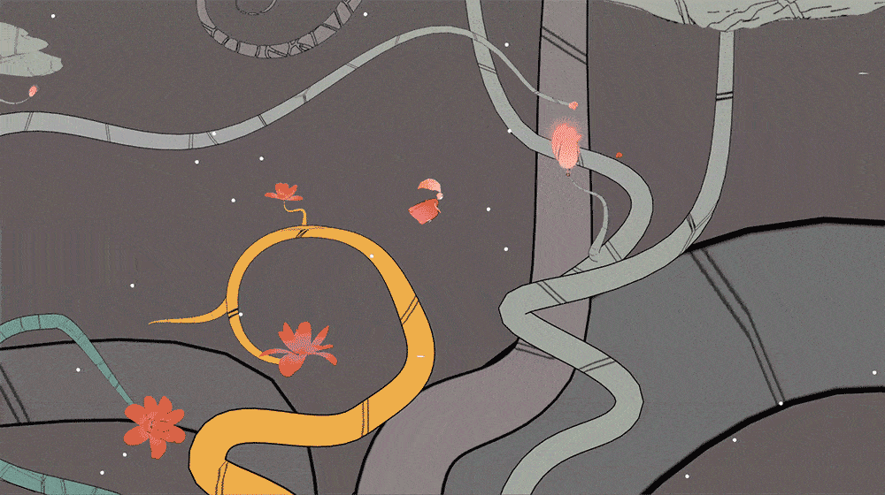
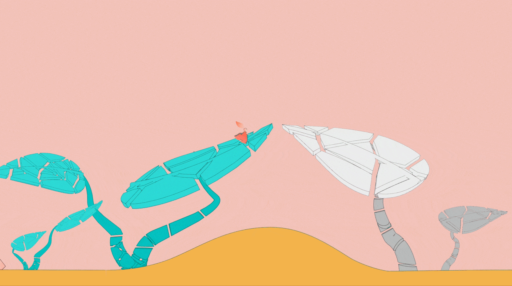
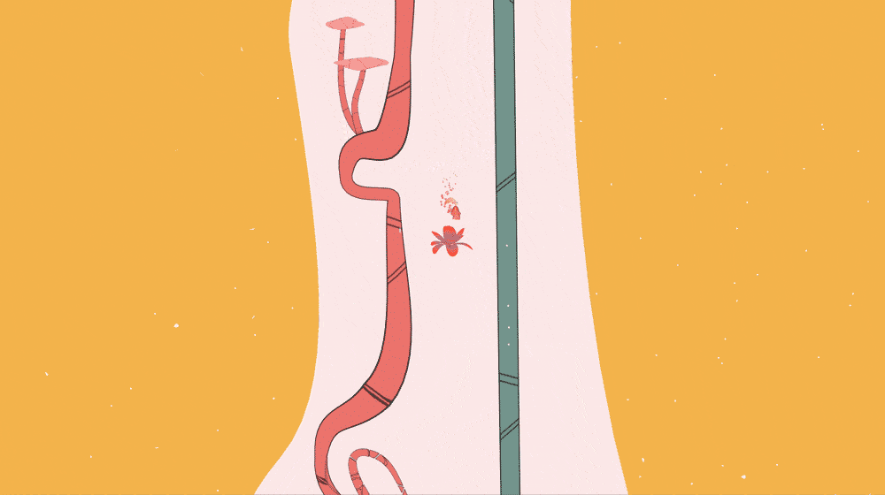

Pointless Mindscape
Platform-Adventure Game
The Task
Build a compelling navigable environment using Unity3D game engine
My senior capstone project at UCLA. I created a 2D game where the player plays as the main character and explores the eerie parts of the world.
Skills
Unity
Cinema 4D
Game Design
Game Development/C#
Orby is born into a world between their past life and next life, a limbo where they are unable to escape unless they complete building the “bridge” that leads to the gate of the next life.
Throughout the game, Orby would receive messages which their past friends and families burnt for them, containing memories of their past life. They would sometimes come across lost spirits that linger in this world and would be able to give them a little bit of warmth. In return, they would tell snippets of their past lives.
Flowers act as guidance and progress throughout the game. If you find all 5 flowers, the bridge to the next world will appear. When you find the bridge, you will have a choice to either cross it or not.
This is an experience for people who fall into the limbo of nostalgia and have trouble moving on.
 *not supported on mobile devices
How to Play
Run Left or Right – Press key A or D
Jump – Press Space Bar
This is a demo of the full game, which is still under development. The demo shows the character movement, art style, and the general mood for the game.